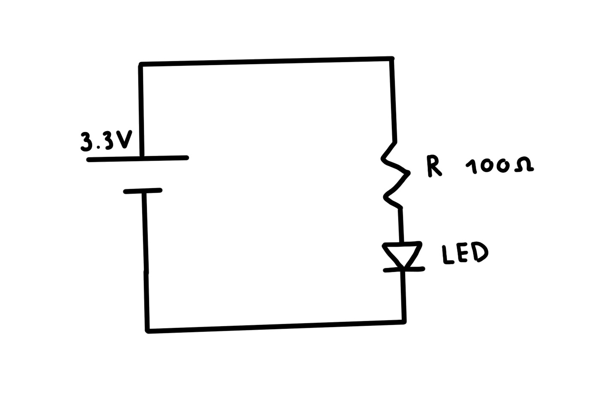
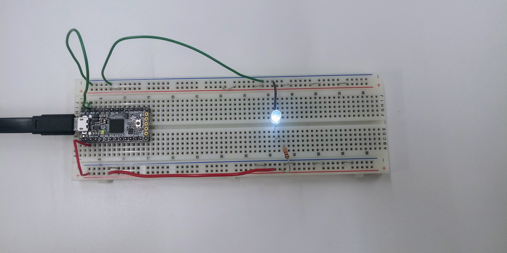
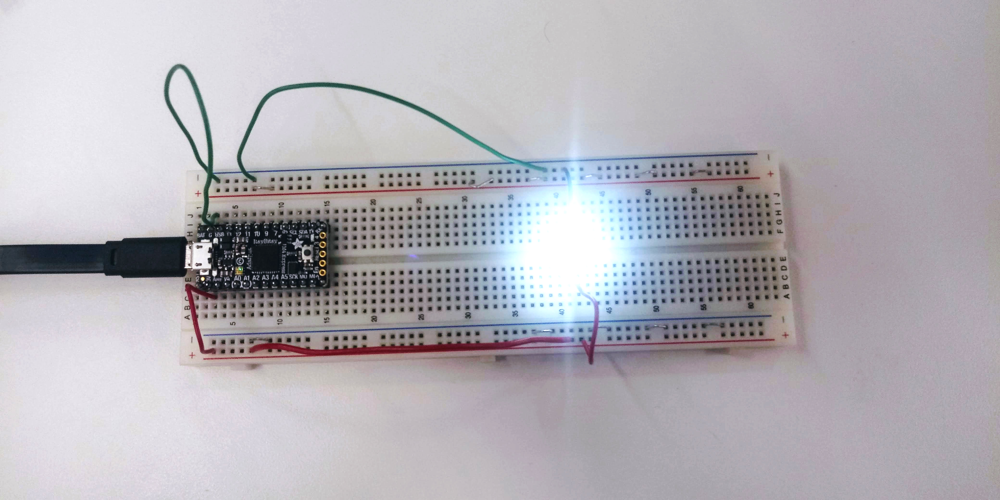

This week, we worked on creating basic ciruits. This was my first time working with a breadboard and an Adafruit Itsy Bitsy, so I focused on just making a basic circuit. I had some trouble at first making the circuit since I got confused about which ways the breadboard was connected. I was trying to make following circuit:
Once I got the circuit working, I played around with some small variations in the way the circuit was strung together to see how it affected the circuit. When I removed the resistor, I noticed that the light got a lot brighter. When I measured the voltage around the diode without the resistor, the value was larger than the tension with the resistor.
The light with the resistor
The light without the resistor
The tension measured with the multi-meter around the diode without the resistor was about 3.3V, and with was 2.7V, while the tension around the resistor was 0.6V.